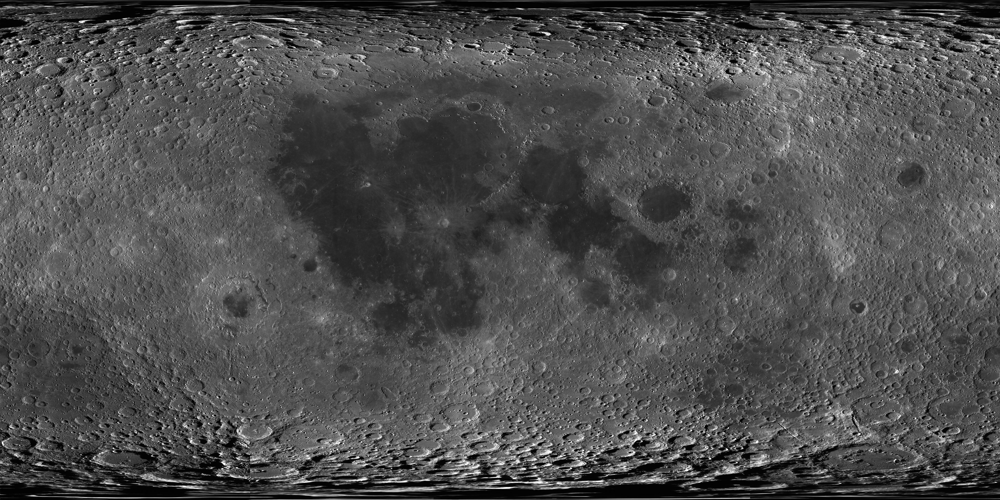

· DRAG TO LOOK AROUND · USE PLAY OR ← → TO RUN THE MISSION CLOCK
MOON MAP · NASA DATA AS LAYERS ON THE MOON · PICK A LAYER · CLICK ANY SPOT TO LAND THERE
LOOK AT
LAYER · PICK ONE
DATA PROFILE · AT ONE POINT
ABOUT THIS LAYER · AND ITS SOURCE
MISSION HISTORY · REAL LANDINGS SINCE 2023, REPLAYED WITH LUNI'S NASA DATA · PICK ONE, THEN LOAD IT

THE WHOLE MOON · NEAR SIDE IN THE MIDDLE
MISSION
SUN HEIGHT AT LANDING
SUNLIGHT LEFT AFTER LANDING
EARTH AT LANDING
GROUND SLOPE
THE 30 DAYS AFTER LANDING · ■ SUN■ EARTH IN VIEW · ▼ REAL END
WHAT REALLY HAPPENED
ORDER:NUMBERS AND BARS: LUNI, FROM NASA SPICE AND LOLA DATA. MISSION RECORDS: THE SOURCES LISTED FOR EACH MISSION. LUNI'S DATA COVERS 2023 TO 2035, SO EARLIER LANDINGS (APOLLO, CHANG'E 4) CANNOT BE REPLAYED ON THEIR OWN DATES.
1WHERE · PICK A LANDING SITE
OR ANY POINT
━ SUN━ EARTH
DRAG TO TURN · SCROLL TO ZOOM · CLICK A SPOT TO LAND THERE
2WHEN · DATE
UTC = WORLD TIME (SAME AS GMT)
3MISSION NEEDS · CLICK TO CHANGE
MISSION LENGTHD
CAN SIT IN THE DARKH
EARTH LINK AT LEAST%
EARTH LINK AT LANDING
GROUND SLOPE AT MOST°
SCAN SIZEHOW FAR OUT TO LOOK
MAP SHOWS
EACH SQUARE IS A PLACE YOU COULD LAND. ★ IS THE BEST ONE FOUND. CLICK ANY SQUARE TO MOVE YOUR SITE THERE
BEST SPOT FOUND ★
THE COLORS ·
DATA PROFILE · WHERE YOU ARE NOW
WHERE YOU ARE NOW
PROOF · HOW YOU CAN TELL LUNI IS RIGHT, AND WHERE IT STOPS
4THE ANSWER · CAN THIS MISSION LAND HERE, AT THIS TIME?